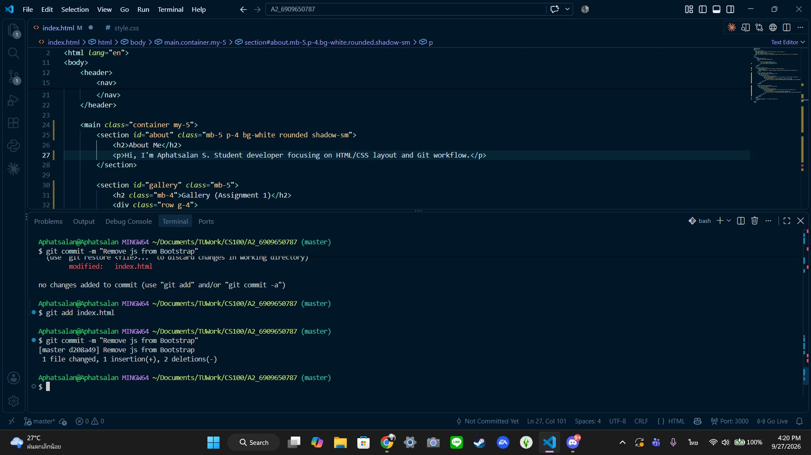

CS100 Individual Responsive Learning Portfolio (A2)
Name: Aphatsalan Seetha
Student ID: 6909650787
Major: Computer Science, Faculty of Science
I am a first-year student. I am interested in web development and programming. I am learning software development in the CS100 class, and I am practicing Responsive Web Design and Git/GitHub too!
Date: 30 Aug 2026 | Role: Individual Developer
Description: I am building a simple one-page Learning Portfolio website using HTML and CSS to practice basic Semantic HTML and web page styling.
Skills: HTML, CSS, Semantic HTML
Date: 27 Sep 2026 | Role: Self-Learner / Developer
Description: I studied and practiced using Git and basic commands by myself at home. I created a test repository, tried out the branching system, and simulated code fixes to get ready for real software development.
Skills: Git, GitHub, Version Control

Click the image to view the full-size screenshot